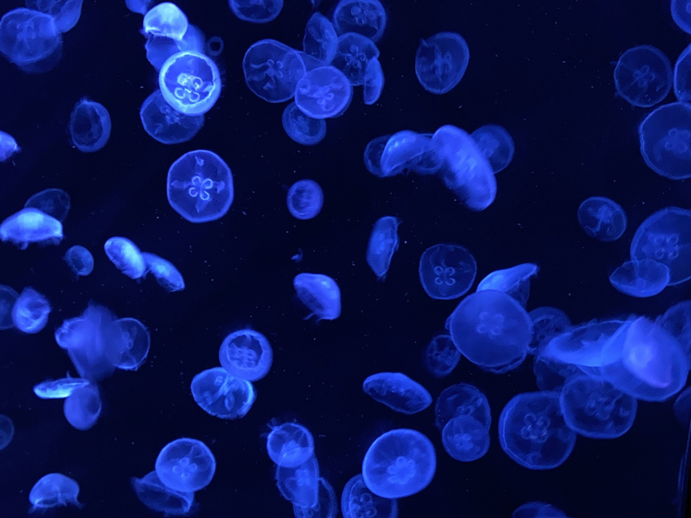

Join Our Team
Opportunities for Students, Postdocs, and Collaborators
Research Opportunities in Comparative Genomics & Developmental Biology
About Working in Our Lab
The Khalturin Lab is a dynamic research group focused on understanding the genomics and developmental biology of marine invertebrates. We are particularly interested in jellyfish and hydra models. Our lab provides a supportive environment for scientific growth with access to cutting-edge facilities and a collaborative atmosphere.
We welcome inquiries from motivated students and researchers who share our passion for marine biology, genomics, and evolutionary developmental biology.
Open Positions
Currently, we have no open positions right now.